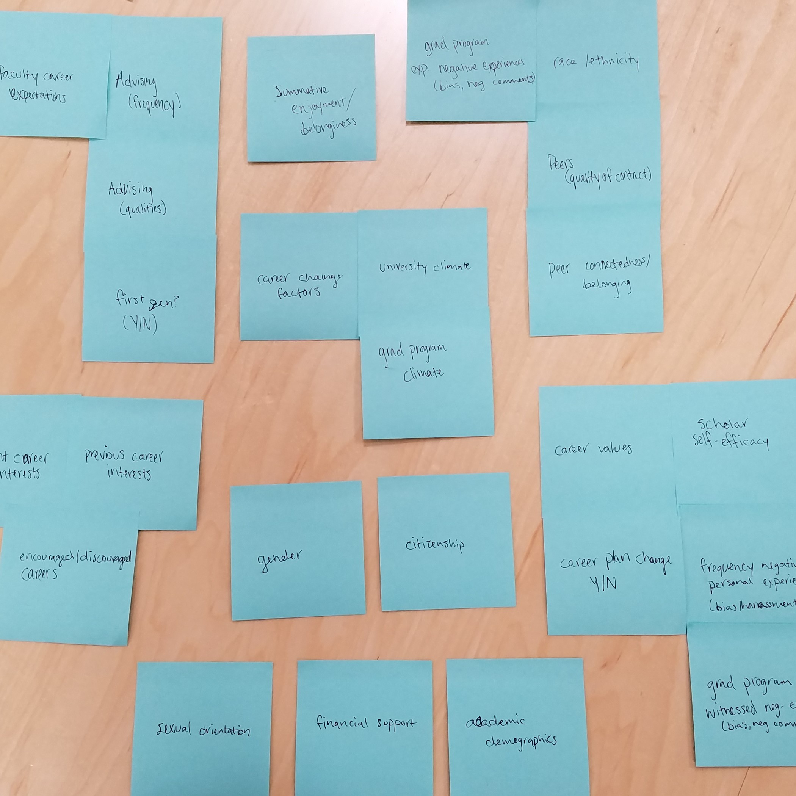
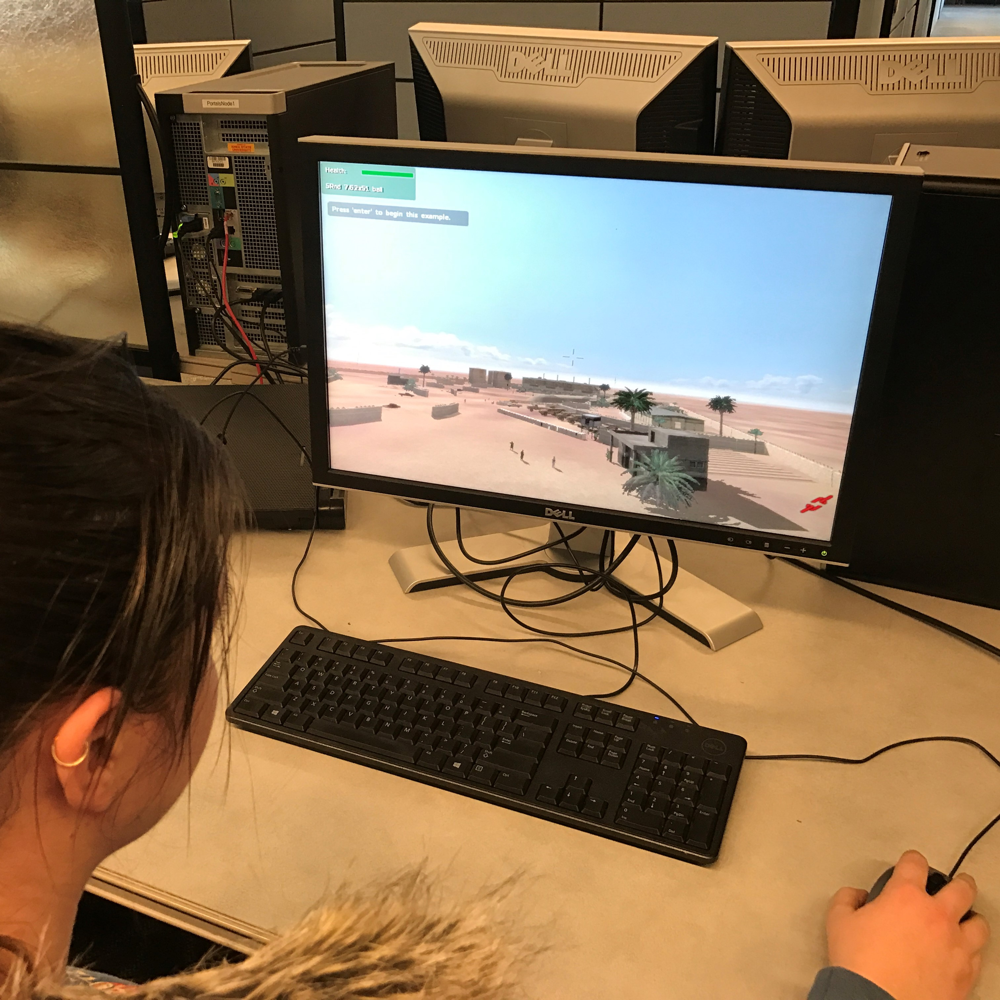

Kaitlyn Ouverson
Home
Projects
CIRTL
ARL User Testing
Voting Machine Usability
John Deere User Study
U-TuRN
Lazy Suzan App
Boeing SCDP
About Me
Projects
Projects
Data Visualization for the Center for the Integration of Research, Teaching and Learning
User Testing for the Army Research Laboratory
Usability Testing for a Voting Machine Company
User Study for John Deere
Data Visualization with the Iowa State University Translational Research Network
The Lazy Suzan Application
 User Study for John Deere
User Study for John Deere The Lazy Suzan Application
The Lazy Suzan Application